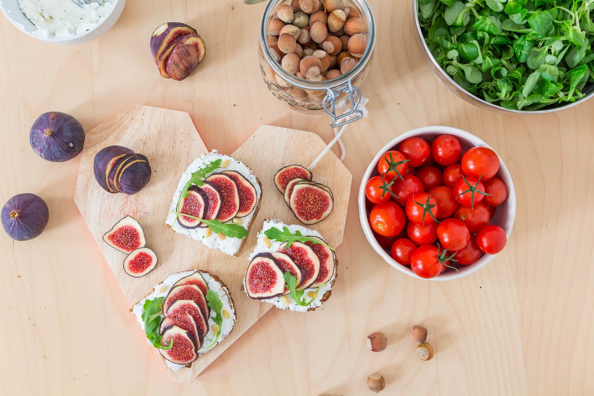

Il y a deux semaines je l'avais décidé ! J'allais faire mon premier brunch 100% maison. Comme tous les samedis je suis donc partie faire mes courses mais ma grande question était : Mais qu'est-ce-que je vais bien pouvoir faire ?
Alors ok... on nous dit "Non mais le brunch c'est trop fun ! On mange de tout, sucré, salé, trucs d'ailleurs et d'ici"... Je veux bien... mais tout c'est quoi ?
Je suis partie à la recherche d'un livre... pas trouvé. J'ai donc cherché dans ma tête, réfléchie à ce que j'aimais et ce qu'aimait mon invité et petit à petit j'ai eu les idées.
Pour moi : le dimanche matin je cours le matin (minimum 10km) il me fallait donc un brunch qui récompense les efforts que je venais de fournir mais aussi un brunch plein d'énergie pour affronter l'après-midi boulot du dimanche (= être auto-entrepreneur et en CDI 39h) mais aussi équilibré.
Pour l'invité : le dimanche, il récupère de sa soirée du samedi soir donc des choses qui rassasient bien mais qui ne ballonnent pas trop...
Je vous laisse découvrir mes choix et une super recette de... English Muffins Complets parfaits pour les tartines et les Egg Muffins !
